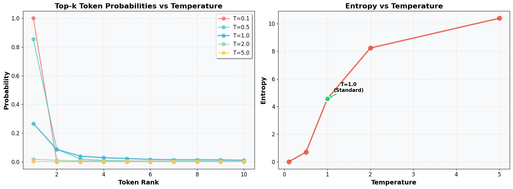

from transformers import AutoModelForCausalLM, AutoTokenizer
import torch
import numpy as np
import matplotlib.pyplot as plt
import pandas as pd
from collections import Counter
from scipy.stats import entropy
# Rich imports for better formatting
from rich.console import Console
from rich.table import Table
from rich.text import Text
from rich import print as rprint
# Initialize rich console
console = Console()Temperature Scaling in Softmax: The Mathematics
Temperature scaling modifies the softmax function to control the “sharpness” of the probability distribution. The standard softmax function is:
\[\text{softmax}(x_i) = \frac{e^{x_i}}{\sum_{j=1}^{n} e^{x_j}}\]
With temperature scaling, we introduce a temperature parameter \(T\):
\[\text{softmax}_T(x_i) = \frac{e^{x_i/T}}{\sum_{j=1}^{n} e^{x_j/T}}\]
Effects of Temperature:
- T = 1: Standard softmax (no scaling)
- T > 1: Higher temperature → More uniform distribution → More randomness
- T < 1: Lower temperature → Sharper distribution → More deterministic
- T → 0: Distribution becomes one-hot (argmax)
- T → ∞: Distribution becomes uniform
Entropy and Diversity:
The entropy of a probability distribution measures its randomness: \[H(p) = -\sum_{i=1}^{n} p_i \log p_i\]
Higher temperature typically leads to higher entropy and more diverse outputs.
Imports and Setup
Let’s import the necessary libraries and set up our environment:
All necessary libraries loaded for language modeling, visualization, and rich formatting.
Visual Demonstration
Let’s create a visual diagram showing how temperature affects probability distributions:
# Create sample logits and temperature ranges
logits = np.array([2.0, 1.0, 0.5, 0.2, 0.1])
temperatures = [0.1, 0.5, 1.0, 2.0, 5.0]
# Create subplots to show each temperature's distribution
fig, axes = plt.subplots(1, len(temperatures), figsize=(20, 4))
for i, temp in enumerate(temperatures):
# Calculate probabilities for this temperature
scaled_logits = logits / temp
probs = np.exp(scaled_logits) / np.sum(np.exp(scaled_logits))
# Create DataFrame for this temperature
df_temp = pd.DataFrame({
'Token': [f'Token_{j}' for j in range(len(logits))],
'Probability': probs
})
# Plot distribution for this temperature
df_temp.plot(x='Token', y='Probability', kind='bar', ax=axes[i],
color='steelblue', alpha=0.7, legend=False)
axes[i].set_title(f'Temperature = {temp}')
axes[i].set_ylabel('Probability')
axes[i].set_ylim(0, 1)
axes[i].tick_params(axis='x', rotation=45)
plt.suptitle('Temperature Scaling Effects: Distribution Shape Changes', fontsize=16)
plt.tight_layout()
plt.show()This diagram clearly shows how temperature reshapes probability distributions - low temperatures create peaked distributions while high temperatures flatten them.
Model Setup
Load a language model to explore temperature effects in practice:
model_name = "distilgpt2"
tokenizer = AutoTokenizer.from_pretrained(model_name)
model = AutoModelForCausalLM.from_pretrained(model_name)
# Set padding token to avoid warnings
tokenizer.pad_token = tokenizer.eos_tokenDistilGPT2 loaded with proper tokenizer configuration.
Example Prompt
Let’s start with a simple prompt to analyze:
prompt = "In the future, AI will"
input_ids = tokenizer(prompt, return_tensors="pt").input_ids
print("Input IDs:", input_ids)
print("Vocabulary size:", model.config.vocab_size)Input IDs: tensor([[ 818, 262, 2003, 11, 9552, 481]])
Vocabulary size: 50257The model converts text to token IDs and works with a vocabulary of 50,257 tokens.
Text Generation with Low Temperature
Generate text with very low temperature to see deterministic behavior:
output = model.generate(
input_ids,
do_sample=True,
temperature=0.01,
max_new_tokens=20,
top_k=50,
pad_token_id=tokenizer.eos_token_id,
attention_mask=torch.ones_like(input_ids)
)
decoded = tokenizer.decode(output[0], skip_special_tokens=True)
print("Generated text:", decoded)Generated text: In the future, AI will be able to do things like make people smarter, more intelligent, more intelligent, more intelligent, moreLow temperature produces repetitive, deterministic text.
Logits Analysis
Let’s examine the raw logits and probabilities for next token prediction:
# Get the logits for prediction
with torch.no_grad():
outputs = model(input_ids)
logits = outputs.logits
# Show logits and probabilities for top 10 tokens
top_logits, top_indices = torch.topk(logits[0, -1], k=10)
top_probs = torch.softmax(top_logits, dim=0)
top_tokens = [tokenizer.decode([idx]) for idx in top_indices]
# Create a clean table
table = Table(title="Top 10 Token Predictions")
table.add_column("Rank", style="dim")
table.add_column("Token", style="cyan")
table.add_column("Logit", style="magenta")
table.add_column("Probability", style="green")
for i, (token, logit, prob) in enumerate(zip(top_tokens, top_logits, top_probs)):
table.add_row(
str(i + 1),
repr(token),
f"{logit.item():.4f}",
f"{prob.item():.4f}"
)
console.print(table)Top 10 Token Predictions ┏━━━━━━┳━━━━━━━━━━━━━┳━━━━━━━━━━┳━━━━━━━━━━━━━┓ ┃ Rank ┃ Token ┃ Logit ┃ Probability ┃ ┡━━━━━━╇━━━━━━━━━━━━━╇━━━━━━━━━━╇━━━━━━━━━━━━━┩ │ 1 │ ' be' │ -63.5934 │ 0.5269 │ │ 2 │ ' have' │ -64.7306 │ 0.1690 │ │ 3 │ ' need' │ -65.5254 │ 0.0763 │ │ 4 │ ' become' │ -65.8555 │ 0.0549 │ │ 5 │ ' not' │ -66.0847 │ 0.0436 │ │ 6 │ ' also' │ -66.4207 │ 0.0312 │ │ 7 │ ' take' │ -66.5617 │ 0.0271 │ │ 8 │ ' continue' │ -66.5808 │ 0.0266 │ │ 9 │ ' make' │ -66.6369 │ 0.0251 │ │ 10 │ ' only' │ -66.8984 │ 0.0193 │ └──────┴─────────────┴──────────┴─────────────┘
The model shows clear preference for certain tokens, with “be” having the highest probability.
Token Sampling
Sample tokens from the probability distribution to see randomness in action:
# Sample tokens from the distribution
sampled_indices = torch.multinomial(top_probs, num_samples=100, replacement=True)
sampled_tokens = [top_tokens[idx] for idx in sampled_indices]
print("Sample of tokens:", sampled_tokens[:20])
# Count occurrences
token_counts = Counter(sampled_tokens)
print("\nToken counts from 100 samples:")
for token, count in token_counts.most_common():
print(f"Token: {token}, Count: {count}")Sample of tokens: [' not', ' be', ' be', ' be', ' be', ' become', ' be', ' have', ' be', ' be', ' need', ' have', ' be', ' be', ' be', ' be', ' make', ' be', ' need', ' be']
Token counts from 100 samples:
Token: be, Count: 55
Token: have, Count: 14
Token: become, Count: 8
Token: need, Count: 8
Token: make, Count: 4
Token: not, Count: 3
Token: take, Count: 2
Token: also, Count: 2
Token: continue, Count: 2
Token: only, Count: 2Token counts from 100 samples reflect the underlying probability distribution.
Temperature Scaling Comparison
Compare extreme temperature values to see dramatic differences:
# Temperature scaling comparison
high_temperature = 100.0
low_temperature = 0.01
scaled_logits_high = logits / high_temperature
scaled_logits_low = logits / low_temperature
# Get top 10 tokens for each temperature
top_logits_high, top_indices_high = torch.topk(scaled_logits_high[0, -1], k=10)
top_probs_high = torch.softmax(top_logits_high, dim=0)
top_tokens_high = [tokenizer.decode([idx]) for idx in top_indices_high]
top_logits_low, top_indices_low = torch.topk(scaled_logits_low[0, -1], k=10)
top_probs_low = torch.softmax(top_logits_low, dim=0)
top_tokens_low = [tokenizer.decode([idx]) for idx in top_indices_low]
# Create comparison table
table = Table(title="Temperature Scaling Comparison")
table.add_column("Rank", style="dim")
table.add_column("Token", style="cyan")
table.add_column("High T (100.0)", style="green")
table.add_column("Low T (0.01)", style="red")
for i in range(10):
table.add_row(
str(i + 1),
repr(top_tokens_high[i]),
f"{top_probs_high[i].item():.4f}",
f"{top_probs_low[i].item():.4f}"
)
console.print(table)Temperature Scaling Comparison ┏━━━━━━┳━━━━━━━━━━━━━┳━━━━━━━━━━━━━━━━┳━━━━━━━━━━━━━━┓ ┃ Rank ┃ Token ┃ High T (100.0) ┃ Low T (0.01) ┃ ┡━━━━━━╇━━━━━━━━━━━━━╇━━━━━━━━━━━━━━━━╇━━━━━━━━━━━━━━┩ │ 1 │ ' be' │ 0.1023 │ 1.0000 │ │ 2 │ ' have' │ 0.1012 │ 0.0000 │ │ 3 │ ' need' │ 0.1004 │ 0.0000 │ │ 4 │ ' become' │ 0.1000 │ 0.0000 │ │ 5 │ ' not' │ 0.0998 │ 0.0000 │ │ 6 │ ' also' │ 0.0995 │ 0.0000 │ │ 7 │ ' take' │ 0.0993 │ 0.0000 │ │ 8 │ ' continue' │ 0.0993 │ 0.0000 │ │ 9 │ ' make' │ 0.0992 │ 0.0000 │ │ 10 │ ' only' │ 0.0990 │ 0.0000 │ └──────┴─────────────┴────────────────┴──────────────┘
High temperature creates uniform distribution while low temperature creates deterministic selection.
Temperature Analysis
Analyze how different temperatures affect probability distributions and entropy:
# Function to analyze temperature effects
def analyze_temperature_effects(logits, temperatures, top_k=10):
results = []
for temp in temperatures:
scaled_logits = logits / temp
probs = torch.softmax(scaled_logits, dim=-1)
# Get top-k tokens
top_probs, top_indices = torch.topk(probs[0, -1], k=top_k)
top_tokens = [tokenizer.decode([idx]) for idx in top_indices]
# Calculate entropy
prob_dist = probs[0, -1].cpu().numpy()
entropy_value = entropy(prob_dist)
for i, (token, prob) in enumerate(zip(top_tokens, top_probs)):
results.append({
'temperature': temp,
'token': token,
'probability': prob.item(),
'rank': i + 1,
'entropy': entropy_value
})
return results
# Test with different temperature values
temperatures = [0.1, 0.5, 1.0, 2.0, 5.0]
results = analyze_temperature_effects(logits, temperatures)
# Visualize results
fig, axes = plt.subplots(1, 2, figsize=(15, 5))
# Plot 1: Top-k probabilities
for temp in temperatures:
temp_data = [r for r in results if r['temperature'] == temp]
ranks = [r['rank'] for r in temp_data]
probs = [r['probability'] for r in temp_data]
axes[0].plot(ranks, probs, 'o-', label=f'T={temp}', alpha=0.7)
axes[0].set_xlabel('Token Rank')
axes[0].set_ylabel('Probability')
axes[0].set_title('Top-k Token Probabilities vs Temperature')
axes[0].legend()
axes[0].grid(True, alpha=0.3)
# Plot 2: Entropy vs Temperature
entropies = []
for temp in temperatures:
temp_entropy = [r['entropy'] for r in results if r['temperature'] == temp][0]
entropies.append(temp_entropy)
axes[1].plot(temperatures, entropies, 'ro-', linewidth=2, markersize=8)
axes[1].set_xlabel('Temperature')
axes[1].set_ylabel('Entropy')
axes[1].set_title('Entropy vs Temperature')
axes[1].grid(True, alpha=0.3)
plt.tight_layout()
plt.show()
Higher temperatures lead to flatter distributions and higher entropy, confirming the mathematical relationship.
Diverse Examples Across Domains
Test temperature effects on different types of content:
def generate_comparison_examples():
"""Generate examples across different domains to show temperature effects"""
examples = [
("The scientific method involves", "Science"),
("To solve the equation x^2 - 4x + 3 = 0,", "Mathematics"),
("In Shakespeare's time, the theater", "Literature/English")
]
temperatures = [0.3, 1.0, 2.0]
for prompt, domain in examples:
rprint(f"\n[bold]{domain.upper()}[/bold]")
rprint(f"Prompt: '{prompt}'")
rprint("-" * 50)
input_ids = tokenizer(prompt, return_tensors="pt").input_ids
for temp in temperatures:
rprint(f"\n[cyan]Temperature {temp}:[/cyan]")
for i in range(3): # Generate 3 samples per temperature
output = model.generate(
input_ids,
do_sample=True,
temperature=temp,
max_new_tokens=15,
top_k=50,
pad_token_id=tokenizer.eos_token_id,
attention_mask=torch.ones_like(input_ids)
)
generated_text = tokenizer.decode(output[0], skip_special_tokens=True)
new_text = generated_text[len(prompt):].strip()
rprint(f" Sample {i+1}: {new_text}")
print()
generate_comparison_examples()SCIENCE
Prompt: 'The scientific method involves'
--------------------------------------------------
Temperature 0.3:
Sample 1: a series of experiments and experiments that are conducted to determine the properties of the
Sample 2: the use of a number of different methods to determine the exact number of atoms
Sample 3: the use of a single-digit number to identify the source of the source
Temperature 1.0:
Sample 1: using a method called in realtime to estimate the frequency or frequency of incoming
Sample 2: changing every element of the cell's genome to an arbitrary set of mutations in
Sample 3: the formation and construction of a crystal. The following steps include:
Temperature 2.0:
Sample 1: examining chemical reactions among humans through blood alcohol level (admittedly much of its
Sample 2: evaluating a number or finding something relevant or useful.
Sample 3: a selection task whereby each candidate learns a standard for scientific knowledge concerning what type
MATHEMATICS
Prompt: 'To solve the equation x^2 - 4x + 3 = 0,'
--------------------------------------------------
Temperature 0.3:
Sample 1: x^2 - 4x + 3 = 0, x^2 -
Sample 2: x^2 + 4 = 0, x^2 + 4 = 0
Sample 3: x^2 = 0, x^2 = 0, x^2
Temperature 1.0:
Sample 1: + 1 = 0, + 2 = 0, + 2 = 0,
Sample 2: 3 = 3, 3 = 2, 3 = 4, 4 = 4
Sample 3: 0 / 2 ^ 3 = 12x2 + 5 = 11 x =
Temperature 2.0:
Sample 1: (q<sqrt({-3x_{x-1} =
Sample 2: 0x4 - 6x *(s)} . Here there
Sample 3: x / the given equation [ 1 ]; But as they move across these
LITERATURE/ENGLISH
Prompt: 'In Shakespeare's time, the theater'
--------------------------------------------------
Temperature 0.3:
Sample 1: was a place where people could play Shakespeare, and Shakespeare was a place where
Sample 2: was a sort of theater where the audience could be seen and heard.
Sample 3: was a kind of theater, a kind of theater that was a kind of
Temperature 1.0:
Sample 1: set itself on fire when a drunk man threw the gas on his stomach in
Sample 2: is one of the few in the world that can create a musical experience.
Sample 3: can still hold you together with laughter, even if you're in need of
Temperature 2.0:
Sample 1: made its premiere in the 19th century from 1718 and made international,
Sample 2: house itself might become known on Saturday night: as William E. Bennett is
Sample 3: has long been synonymous with the modern "good-quality" arts -- where
Multiple samples reveal consistency patterns at low temperatures and diversity at high temperatures across all domains.
Practical Applications
Use Cases
- Low Temperature (0.1-0.5): Code generation, technical docs, factual content
- Medium Temperature (0.7-1.2): Creative writing, chatbots, general text
- High Temperature (1.5-3.0): Brainstorming, fiction, diverse idea generation
Quick Guidelines
- Start with T=1.0 as baseline
- Lower temperature for consistency and accuracy
- Higher temperature for creativity and diversity
Conclusion
Temperature scaling is a simple yet powerful technique for controlling language model randomness:
- T < 1: More deterministic, consistent outputs
- T = 1: Standard softmax behavior
- T > 1: More random, diverse outputs
Monitor entropy to quantify diversity. Temperature remains one of the most practical tools for controlling LLM behavior.
References
Code and Implementation
- Temperature Scaling Repository: https://github.com/gpleiss/temperature_scaling
- Twitter Discussion: https://x.com/akshay_pachaar/status/1942201076767412307
Academic Sources
- Hinton, G. et al. (2015): “Distilling the Knowledge in a Neural Network” - Original paper introducing temperature in knowledge distillation
- Guo, C. et al. (2017): “On Calibration of Modern Neural Networks” - ICML paper on temperature scaling for calibration
- Goodfellow, I. et al. (2016): “Deep Learning” - Chapter 6 covers softmax and temperature scaling
- Bishop, C. (2006): “Pattern Recognition and Machine Learning” - Chapter 4 discusses softmax temperature
Textbooks
- “Deep Learning” by Goodfellow, Bengio, and Courville - Comprehensive coverage of softmax and sampling techniques
- “Pattern Recognition and Machine Learning” by Christopher Bishop - Mathematical foundations of probability distributions
- “The Elements of Statistical Learning” by Hastie, Tibshirani, and Friedman - Statistical perspective on temperature scaling